Featured Product
MarketWatch
MarketWatch is Java client application designed for use by active traders.
It connects to ITS (Integrated Transaction Systems) servers where all the data shown
is in real time, directly from all Canadian exchanges. Currently, it is intended only for the real-time visualization
of Canadian stock market and generation of trading ideas mostly for intra-day trading. There are plans to
integrate it with ITS's offering of professional trader workstations providing direct market access (order entry).
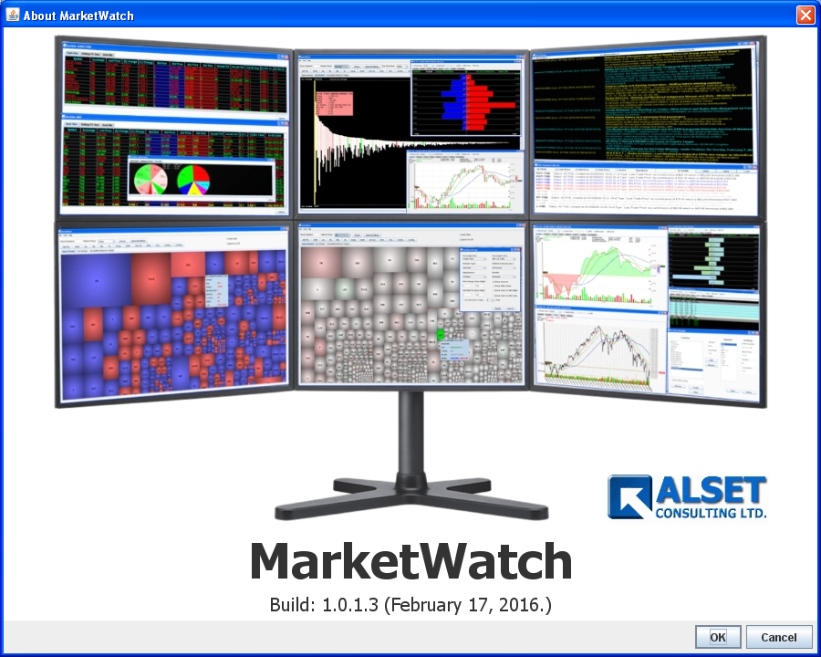
Recommended monitor configuration.
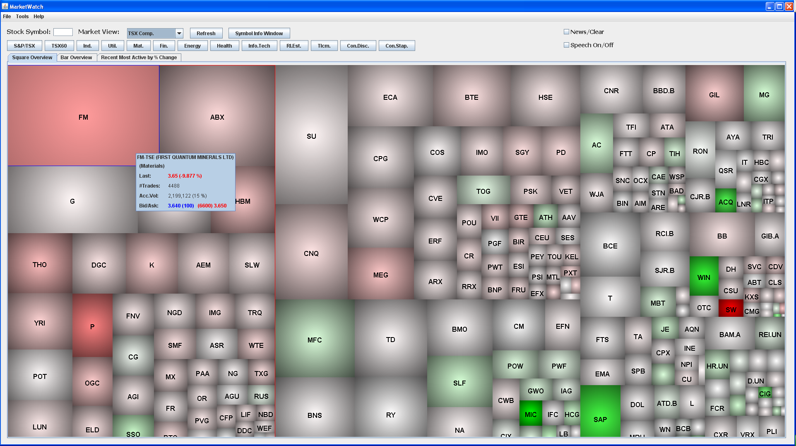
The whole TSX/S&P composite index market (approx. 240 symbols) view grouped by sectors.
Each symbol's rectangle size denotes intra-day traded volume while the color is proportional to price change.
Heatmap appearance settings:
Filters:
Switch:
Heatmap appearance settings:
- Rectangle Size: Accumulated number of trades or volume ( since opening, last 3 or 6 minutes ), percent volume change of average, market capitalization, dividend yield, MOC
- Rectangle Color: Net % or $ price change (since opening, last 3 or 6 minutes )
- Refresh Type (Heatmap): Automatic, Manual
- Refresh Interval for automatic refresh type: 20 seconds, 1 minute, 5 minutes
- Appearance: 3D "pillow", plain rectangle
- Border: with or without border
Filters:
- Price Range
- Dividend Yield range
- Symbols with news
- Symbols hitting 52 week highs/lows
- Symbols with Ex-Dividend date today or up to 7 days from today
Switch:
- Group symbols by sectors
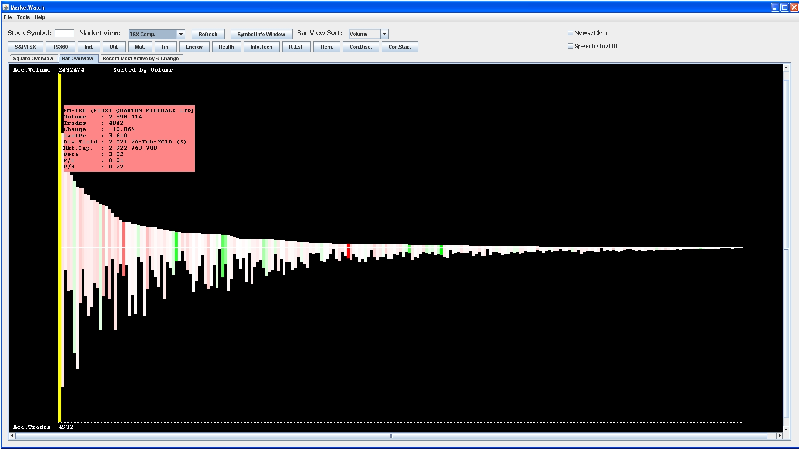
The whole TSX/S&P composite index market bar view.
Showing accumulated volumes (+Y axis), trades (-Y axis), net percent price changes (color), sorted by number of trades (X axis) ( Also available sorting by dividend yield, net percent change, accumulated volume, P/E, P/B, Beta, Market Cap. )
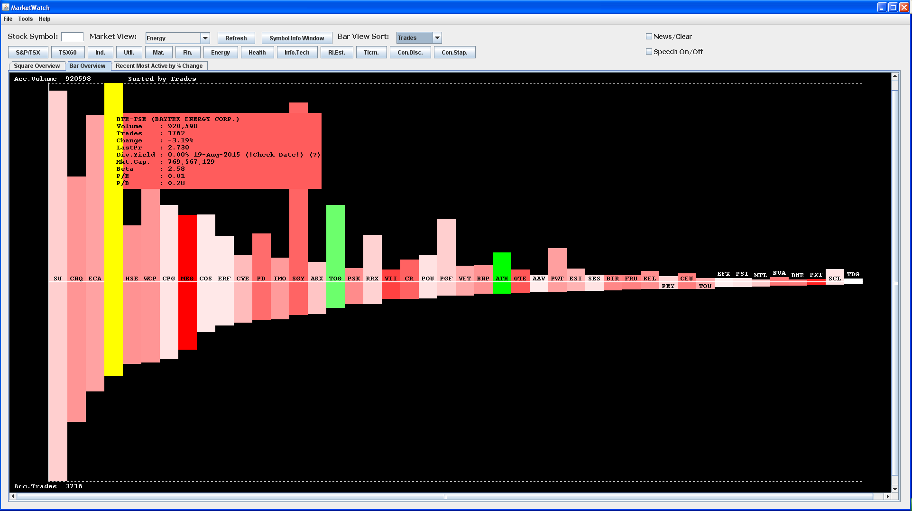
The TSX/S&P Energy sector market bar view.
Showing accumulated volumes (+Y axis), trades (-Y axis), net percent price changes (color), sorted by number of trades from left (max) to right (min) on X axis ( Also available sorting by dividend yield, net percent change, accumulated volume, P/E, P/B, Beta, Market Cap. )
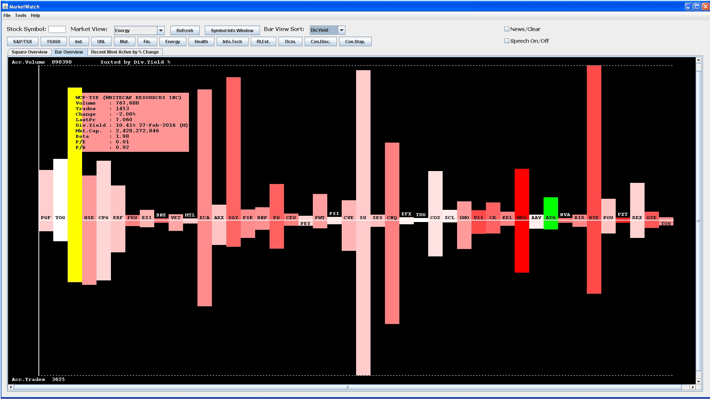
The TSX/S&P Energy sector market bar view.
Showing accumulated volumes (+Y axis), trades (-Y axis), net percent price changes (color), sorted by dividend yield from left (max) to right (min) on X axis ( Also available sorting by number of trades, net percent change, accumulated volume, P/E, P/B, Beta, Market Cap. )
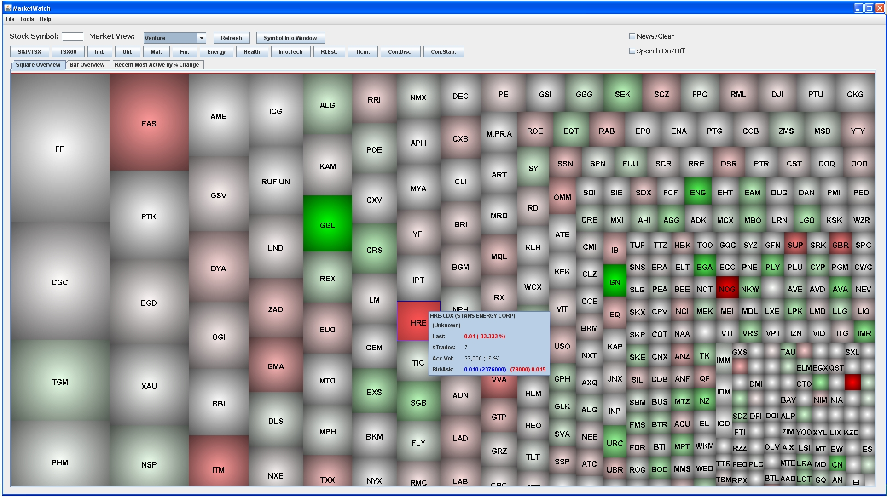
The whole Toronto Venture market view - only the symbols which traded: ( rectangle size shows accumulated number of trades, color net percent price change )
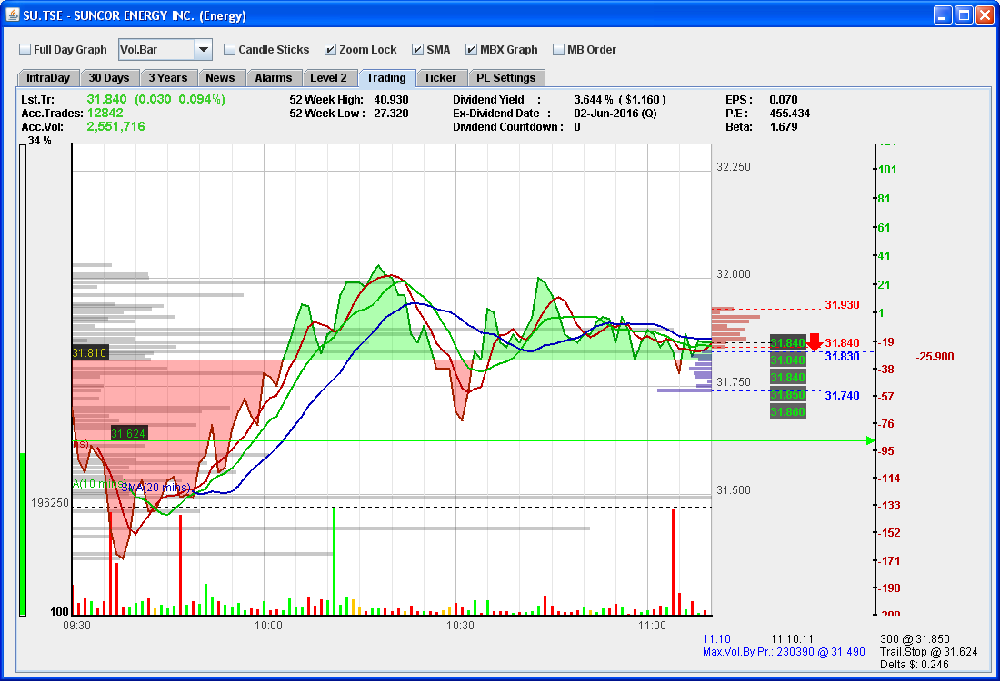
"Trading view" chart -
comprenhensive intra-day real time view of selected symbol:
- intra-day price graph with 5, 10 and 20 min SMA,
- volume/number of trades bars
- intra-day volume level as % of average within last 30 days
- qoute with 10 level MBP
- last five trades and tick direction
- P/L scale with current position
- volume by price levels
- yesterday's close and trailing stop levels
- 52 week high/low, dividend yield, EX-Dividend date, EPS, P/E, Beta
- latest news headline (not shown)
- direct graphical price level ($ or %) comparisson/measurement (not shown)
- direct graphical alert level settings for bid, ask and last price levels (not shown)
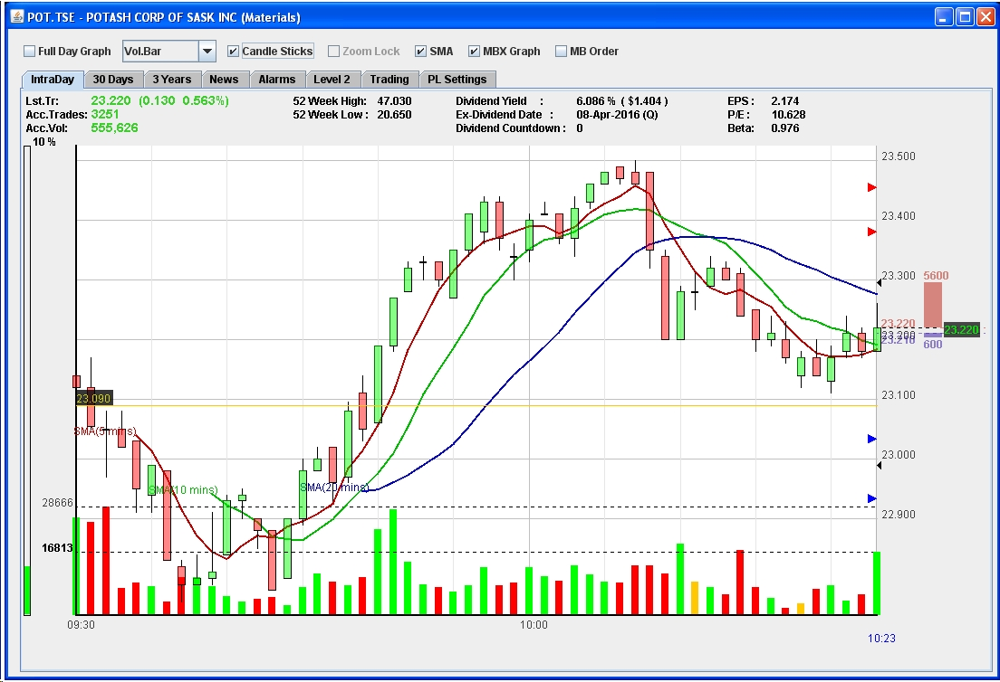
"Quote view" chart -
intra-day real time view of selected symbol:
- intra-day price candle sticks graph with 5, 10 and 20 min SMA,
- volume/number of trades bars
- intra-day volume level as % of average within last 30 days
- graphical qoute (bid/ask/size) with last trade price
- yesterday's close level
- bid/ask/last trade graphical alert level indicators
- 52 week high/low, dividend yield, EX-Dividend date, EPS, P/E, Beta
- latest news headline (not shown)
- direct graphical price level ($ or %) comparisson/measurement (not shown)
- direct graphical alert level settings for bid, ask and last price levels (not shown)
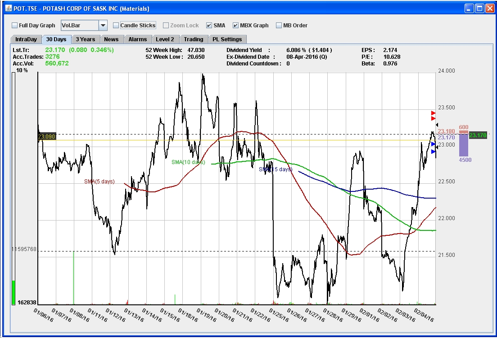
"Quote view" chart -
real time view of selected symbol on a last 30 days historical chart:
- last 30 days graph with 5, 10 and 15 day SMA,
- volume/number of trades bars
- intra-day volume level as % of average within last 30 days
- graphical qoute (bid/ask/size) with last trade price
- yesterday's close level
- bid/ask/last trade graphical alert level indicators
- 52 week high/low, dividend yield, EX-Dividend date, EPS, P/E, Beta
- latest news headline (not shown)
- direct graphical price level ($ or %) comparisson/measurement (not shown)
- direct graphical alert level settings for bid, ask and last price levels (not shown)
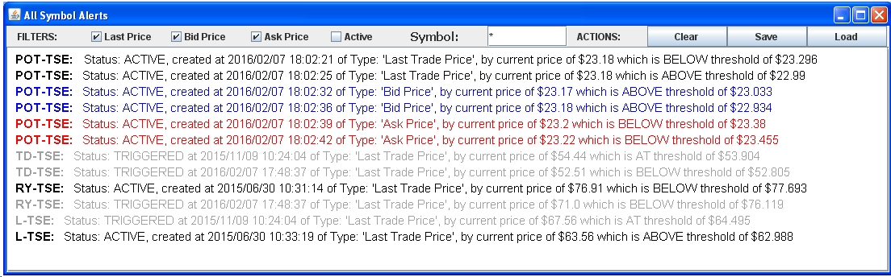
Currently set (active) and triggered alerts:
- last trade price
- last bid price
- last ask price
- alert filters
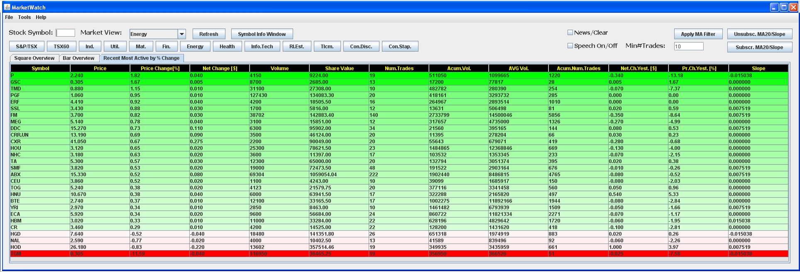
Recent most active symbols by percent price change within last 20 seconds of trading , sorted and color coded by % price change (third column):
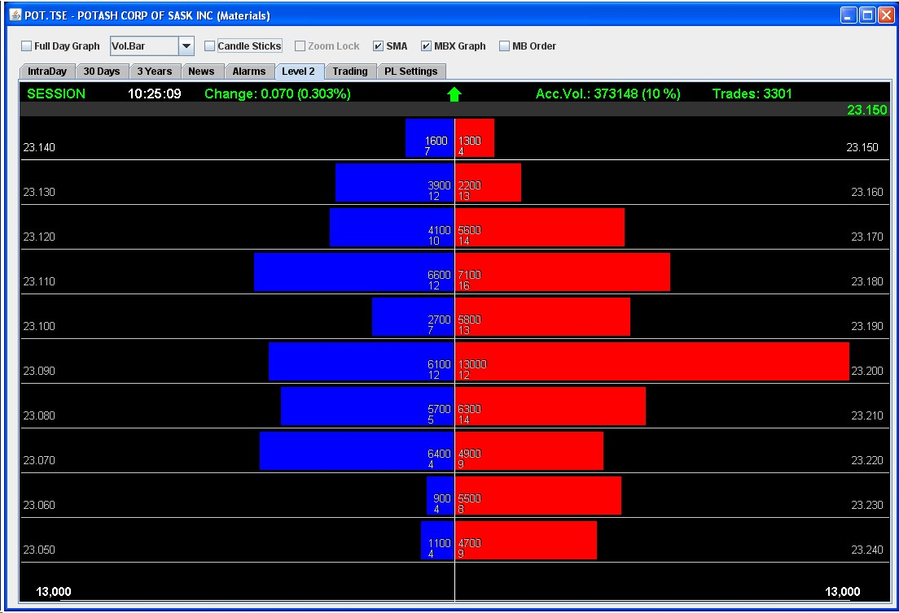
Graphical representation of market by price ( "MBP", 10 levels )
Also shown:
Also shown:
- session status
- last update time stamp
- net % and $ change
- last tick direction
- accumulated volume
- accumulated volume % of average
- accumulated number of trades
- last trade price with (horizontal) position in respect to last quote
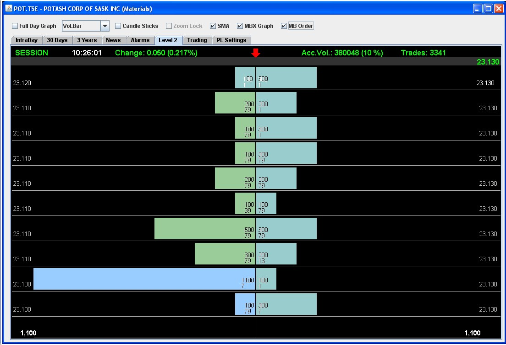
Graphical representation of market by order ( "MBO", 10 levels )
Also shown:
Also shown:
- session status
- last update time stamp
- net % and $ change
- last tick direction
- accumulated volume
- accumulated volume % of average
- accumulated number of trades
- last trade price with (horizontal) position in respect to last quote
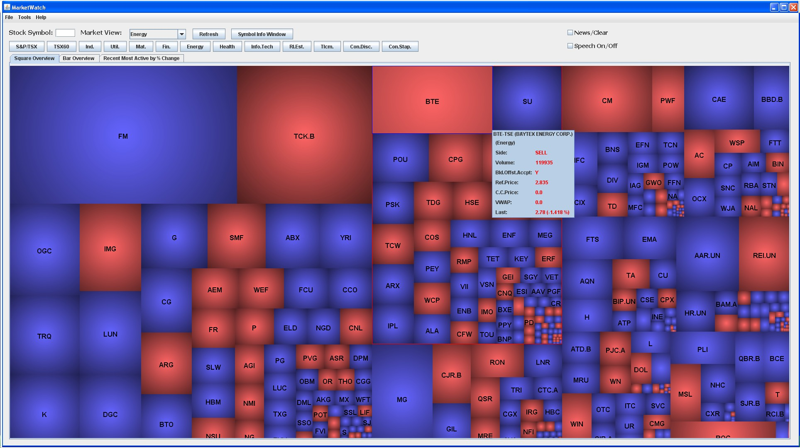
MOC (Market On Close) view of buy/sell imbalances: ( grouped by sectors, blue: buy side, red: sell side, rectangle size is representing volume. Available after 3:40 PM )
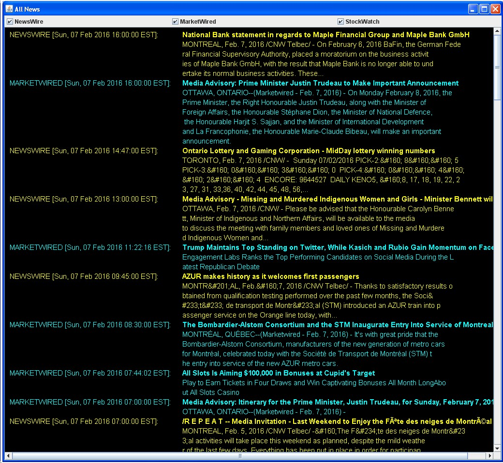
News view - can be filtered by news sources: Newswire, MarketWired and StockWatch
Voice news annunciation is also available.
Voice news annunciation is also available.
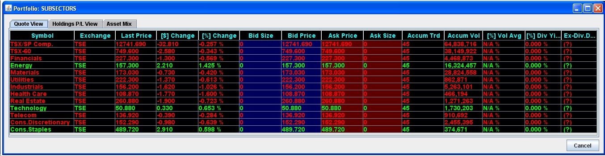
TSX subindexes as a portfolio view
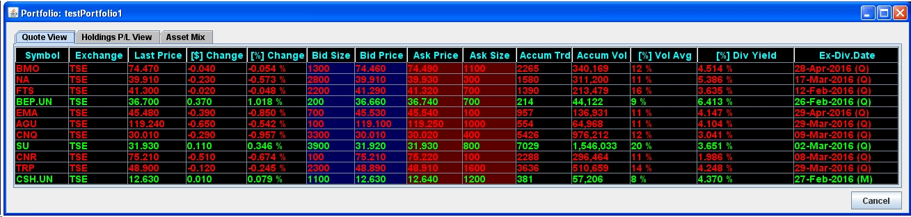
Custom portfolio - quotes view
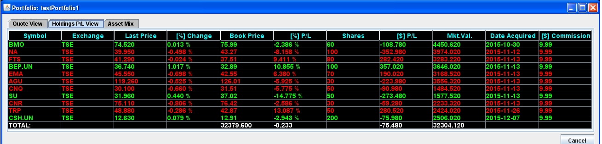
Cusom portfolio - holdings and profit/loss view
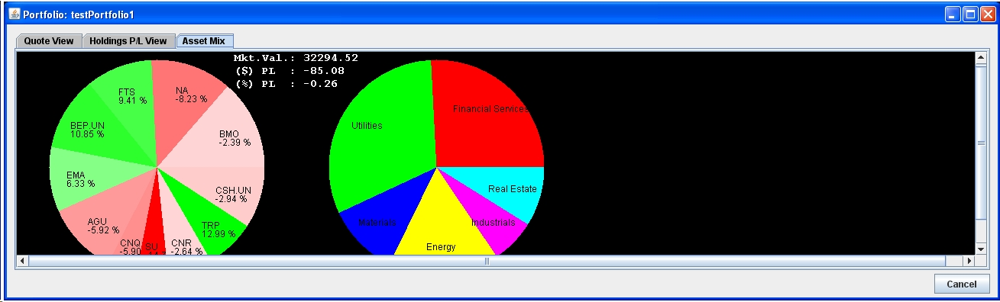
Custom portfolio - asset mix and profit/loss view
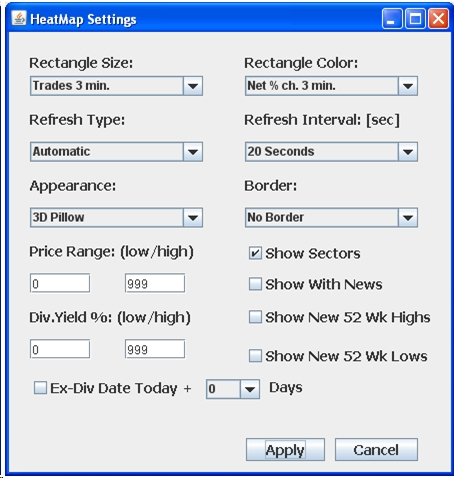
Heatmap and other settings dialog:
Heatmap appearance settings:
Heatmap appearance settings:
- Rectangle Size: Accumulated number of trades or volume (intra-day, last 3 or 6 minutes), percent volume change of average, market capitalization, dividend yield, MOC, quote bid or ask size, quote $ or % spread
- Rectangle Color: Net % or $ last trade price change (intra-day, last 3 or 6 minutes), net % or $ quote bid or ask change (intra-day)
- Refresh Type (Heatmap): Automatic, Manual
- Refresh Interval for automatic refresh type: 20 seconds, 1 minute, 5 minutes
- Appearance: 3D "pillow", plain rectangle
- Border: with or without border
- Price Range
- Dividend Yield range
- Symbols with news
- Refresh interval for automatic refresh type: 20 seconds, 1 minute, 5 minutes
- Symbols hitting 52 week highs/lows
- Symbols with Ex-Dividend date today or up to 7 in the future
- Group symbols by sectors